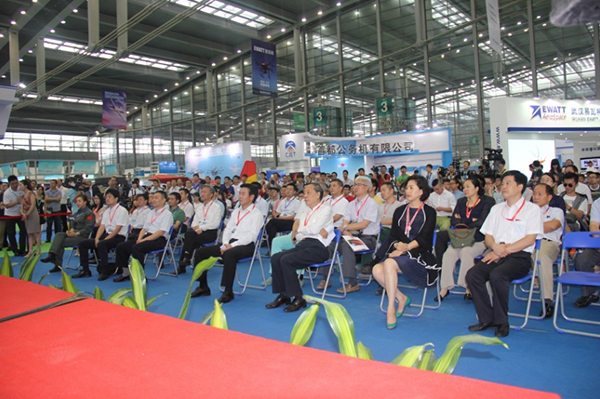
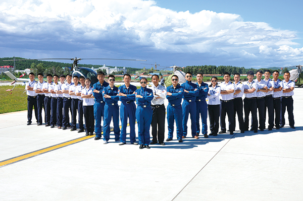
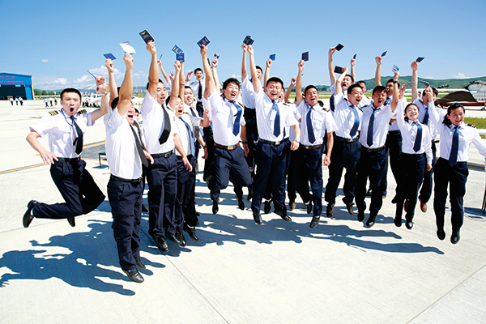

飞行培训
飞行培训
- 2015年9月11日，第三届AOPA国际飞行培训展在深圳开幕。相比起前两届AOPA国际飞训展来说，此次飞训展参展商数量和参展人数再创新高。对于通航产业未来发展的期待，以及对新生通航分支产业的敏感，让华南地区众多重要通航企业都出现在了此次展会上。
- 对于这一点，深圳金石通用航空有限公司总经理彭立武非常认同。金石通航隶属于亚飞太平洋集团。亚飞太平洋集团专注于通航企业投资和业务运营，下辖以航材供应为主营业务的亚飞航材有限公司和飞机引进、包机咨询为主营业务的亚翔航空有限公司。每年4月在上海举办的亚洲公务航空展上，亚翔航空都会发布一份当年的通航业界实力报告，其中包括《大中华区公务机机队报告》、《大中华区直升机机队报告》、《中国地区通航企业实力报告》等，对于中国通航市场的年度发展具有参考作用。
- 金石通航的运行机场位于珠海市阳江机场，主营业务是电力巡线作业以及私照培训。目前拥有的三架飞机中，两架为培训用施瓦泽300CBi直升机，一架为麦道902。彭立武认为，下一个通航热点将在飞行培训业务。
- 这样的判断并不仅仅基于主观意愿。中国飞龙通航大兴安岭分公司副总经理、飞龙航校校长龚全也表达了类似的观点。中国飞龙通航成立于1985年，是中国最早、业务种类最全的通航企业，拥有91部，141部，135部，145部，并且正在申请147部的运行资历。很多资深的民航飞行员都曾经在飞龙进行飞行培训与作业。
- 前身为中国飞龙通航有限公司飞行培训部的大兴安岭分公司成立于2014年3月，主运行基地位于哈尔滨平房机场，训练使用机场分别为平房机场、加格达奇嘎仙机场、天津滨海直升机临时起降点及其他5个转场机场。其中加格达奇嘎仙机场与附近训练机场的空域良好，转场飞行便利，成为大兴安岭分公司最大的训练优势。
- 2014年是飞龙通航大兴安岭分公司的训练“井喷年”，当年实现了直升机飞行训练时数超过8000小时。为此，飞龙在已有15架直升机的基础上，又引进了4架施瓦泽直升机，目前已经全部交付完毕。
- 同样的井喷式发展，也出现在了珠海中航飞行学校（简称“中航飞校”）的工作中。中航飞校总经理侯拥军表示，在2012年中航飞校的前身“深航鲲鹏飞校”成为中航工业的子公司时，曾一度丧失飞行培训资格，在重新获得民航局CCAR-91部和CCAR-141部资质后，飞行小时数已经从2013年的2700小时猛增，2015年达到安全飞行小时数16512小时，比去年同期增长83.5%，而2016年这一数字预计将达到25000小时。


